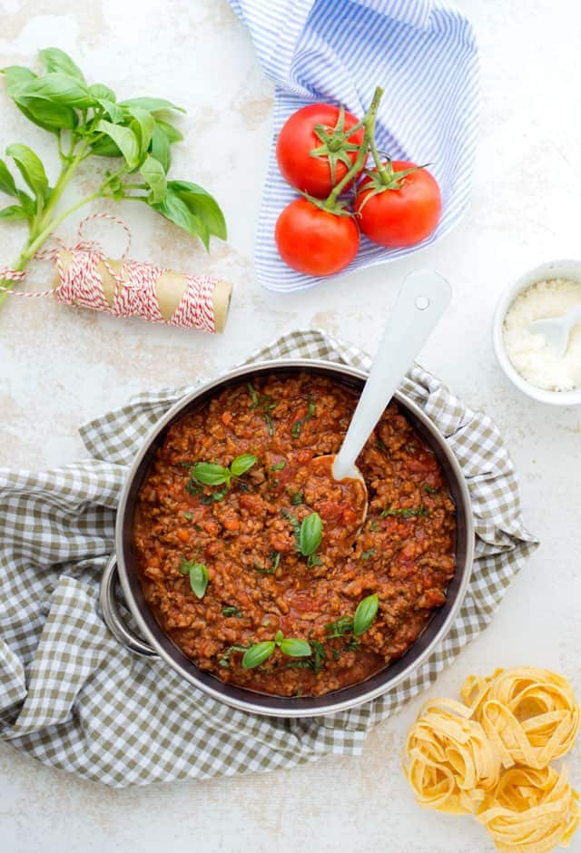

Bolognese

Description
An excellent chunky pasta sauce with beef, pork, lots of vegetables and tons of flavor.
Ingredients
- 2 tablespoons olive oil
- 4 slices bacon, cut into 1/2 inch pieces
- 1 large onion, minced
- 1 clove garlic, minced
- 1 pound lean ground beef
- ½ pound ground pork
- ½ pound fresh mushrooms, sliced
- 2 carrots, shredded
- 1 stalk celery, chopped
- 1 can Italian plum tomatoes
- 6 ounces tomato sauce
- ½ cup dry white wine
- ½ cup chicken stock
- ½ teaspoon dried basil
- ½ teaspoon dried oregano
- salt and pepper to taste
- 1 pound pasta
Steps
- In a large skillet, warm oil over medium heat and saute bacon, onion and garlic until bacon is browned and crisp; set aside.
- In large saucepan, brown beef and pork. Drain off excess fat. Stir in bacon mixture, mushrooms, carrots, celery, tomatoes, tomato sauce,
wine, stock, basil, oregano, salt and pepper to saucepan. Cover, reduce heat and simmer one hour, stirring occasionally.
- Bring a large pot of lightly salted water to a boil. Add pasta and cook for 8 to 10 minutes or until al dente; drain.
- Serve sauce over hot pasta.
Back to recipes